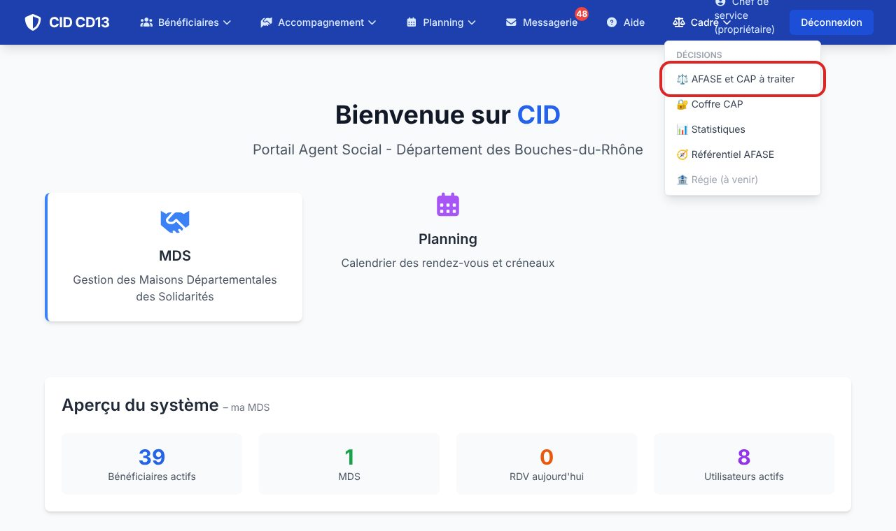
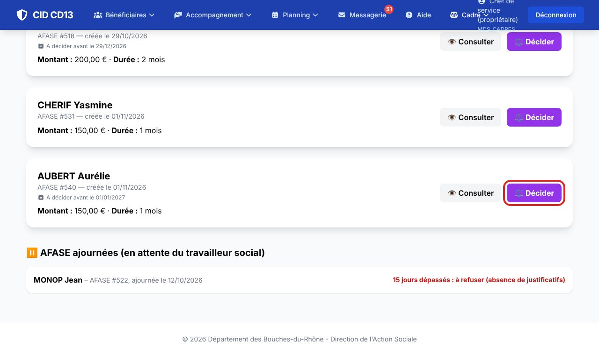
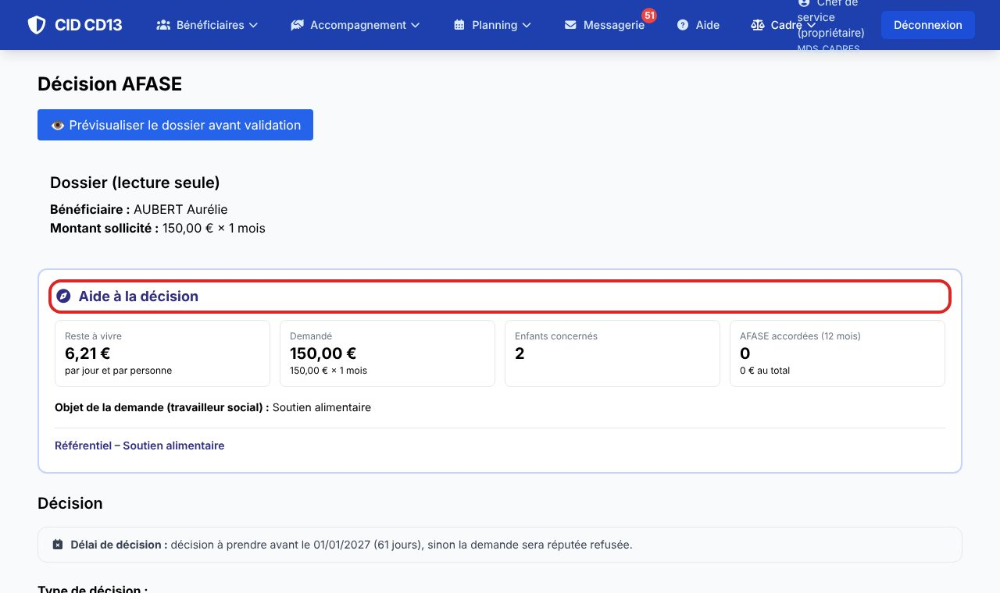
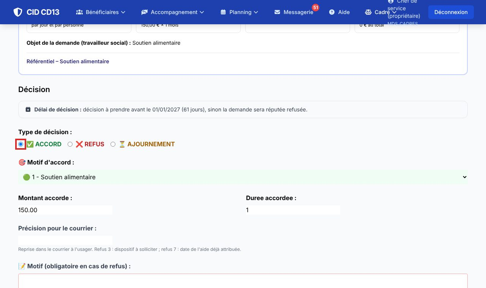
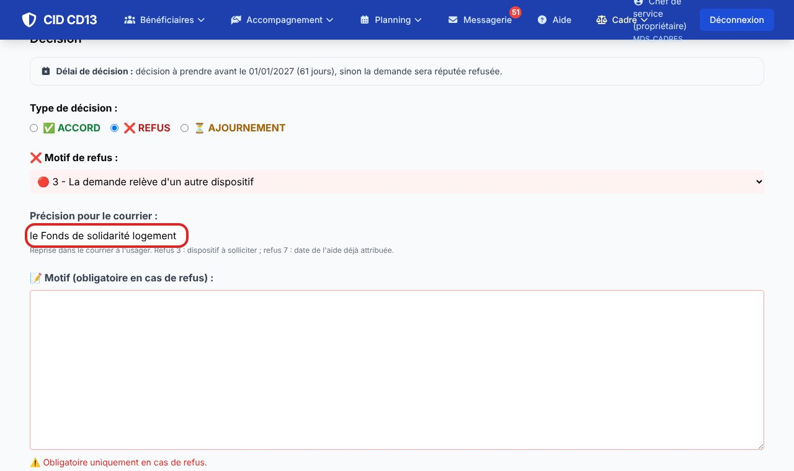
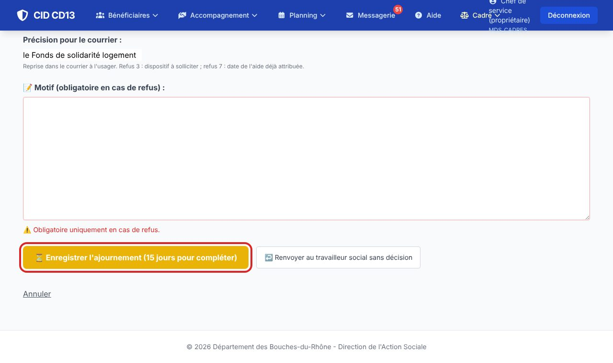
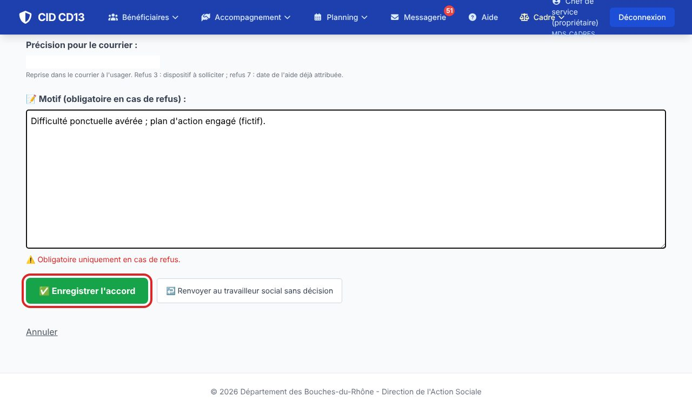
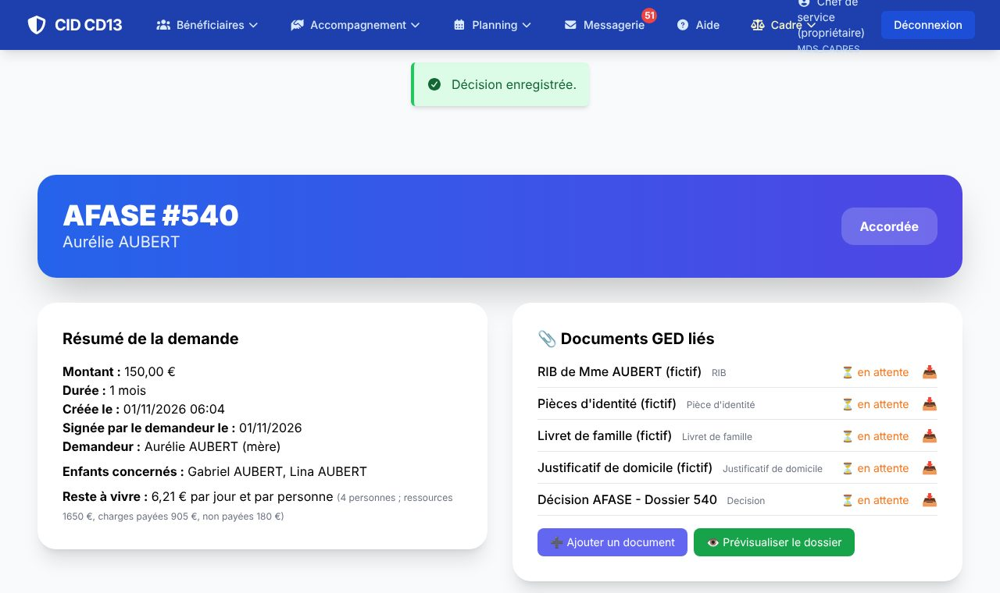

1Ouvrir les demandes à traiter


- Menu Cadre → AFASE et CAP à traiter.
- Chaque demande indique sa date limite (2 mois après la signature) ; les demandes réputées refusées sont en rouge. Les AFASE ajournées sont listées en bas.
- Cliquez sur Décider (ou Consulter pour lire d'abord le dossier).
2Lire l'aide à la décision

- Le cadre « Aide à la décision » rassemble le reste à vivre (et ce qu'il permet pour un soutien alimentaire), le montant demandé, les enfants concernés et les AFASE accordées sur 12 mois.
- Il rappelle l'objet de la demande, les aides de droit commun sollicitées et le référentiel du motif (conditions, montant indicatif).
- Prévisualiser le dossier ouvre le formulaire complet en PDF.
3Choisir la décision



- Cochez Accord, Refus ou Ajournement : la liste des motifs s'adapte.
- Accord : choisissez le motif, ajustez le montant mensuel et la durée.
- Refus : choisissez le code de refus. Pour les codes 3 et 7, remplissez la précision pour le courrier (le dispositif à solliciter, la date de l'aide déjà attribuée) : elle est reprise dans la lettre à l'usager.
- Ajournement : écrivez dans le motif ce qu'il faut compléter ; le travailleur social a 15 jours.
- Le motif (zone de texte) est votre motivation interne : il n'apparaît pas dans le courrier à l'usager.
4Enregistrer


- Vérifiez le libellé du bouton (« Enregistrer l'accord », « … le refus », « … l'ajournement ») et cliquez.
- Le travailleur social reçoit un message CID ; le formulaire de la demande est rangé dans la GED.
- Besoin de rendre la main sans décider ? Renvoyer au travailleur social sans décision remet la demande en instruction (sans délai d'ajournement).
Bon à savoir
- La demande est réputée refusée 2 mois après la date de signature du demandeur : les échéances s'affichent sur la fiche et sur le tableau du cadre, et CID envoie des rappels.
- Une demande ajournée depuis plus de 15 jours peut être tranchée directement : le refus code 1 (absence de justificatifs) est proposé.
- Famille avec un enfant confié ou une mesure d'assistance éducative : la décision revient à l'inspecteur enfance-famille (voir la fiche).
Et ensuite ?
Cliquez sur une image pour l'agrandir. Le cadre rouge montre où cliquer ou quoi remplir. Toutes les données affichées sont fictives.